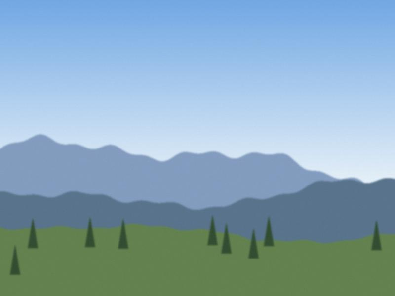
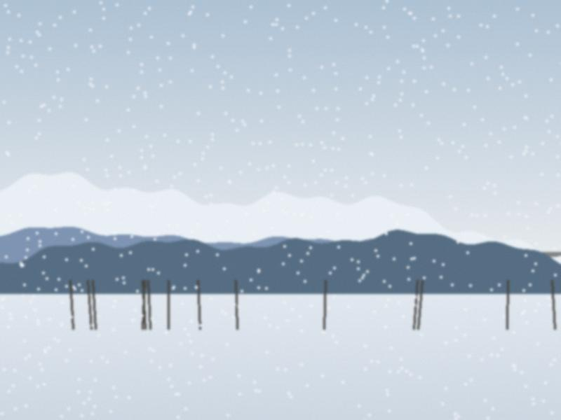

Archive for the ‘Seasons’ Category
Heat, bells, a hundred and fifty thousand, they say. And one candle that went out three times.
Dn. Denha · 24 Aug 2026 · Issue 292 min read
This Feast I walked the whole procession with the cross in the front, and my arms did not hurt. I mention it because five years ago they hurt after one lane. Some things change by simply continuing to do them.
At the end of the morning I stood on the steps with the Gospel and the sun struck the dome. Every year it is as if for the first time. I will not try to describe it. Come and see, if you can.
Five years of letters, and this is the first one I have written in snow.
Dn. Denha · 24 Dec 2025 · Issue 272 min read
Today I counted: this is the sixth Yalda I serve at the altar, counting the first, which I do not remember. The north door is lighter than in 2020 and the cups of kümöch are back on the tray. The old woman's chair stands empty by the pillar. Kenje-apa died in March. We sing her name on the day of the Nativity, and the choir, for one verse, leaves the flat half-tone in.
Happy Yalda to every reader. There are not many of you, but you come back, and that is rare.
Not a prediction, only a few numbers from this year's Feast.
Dn. Denha · 24 Aug 2025 · Issue 262 min read

The hill road before dawn, pilgrims walking up.In the cathedral's book: three bishops' candles, two thousand six hundred and some baptisms, one lost child (found at the crypt door eating a honey cake), one fainting priest (the heat), three lost wallets, four brides. The guest houses of the lane were full from the 18th. The water seller on the hill sold out by nine in the morning.
My favourite entry in the sacristan's book is in his own hand: "Everything went as always, which is to say, by God's mercy and not by our plan."
A letter about what happens when the choir stops.
Dn. Denha · 23 Mar 2025 · Issue 242 min read
In the middle of the Fast we have a Sunday with no instruments and no choir. Only the priest's voice, the deacon's call, and the people's answers, without a note to help. At first it sounds poor, and it frightens the young. By the end it is the richest sound in the year, because you can hear each person.
I stood by the screen and heard Kenje-apa singing the response in her cracked voice, a half-tone flat, and for a whole line she was the choir.
The Archbishop's yearly letter was read in every parish this morning.
Dn. Denha · 04 Oct 2024 · Issue 232 min read
In our calendar the autumn is the Season of Moses: the readings go through the long road in the desert. The Archbishop writes a letter each year on this day, short, hand-signed, and the deacon reads it after the Gospel. It speaks about the road and the water and the people who walk together.
I read it slowly. The nave was quiet. A letter is only words. The words are heard in many ways, and that is not the reader's business.
The families who remember Urkun came again, a few more than two years ago.
Dn. Denha · 15 Aug 2023 · Issue 192 min read
Kenje-apa could not come up the steps this year, so we brought the icon down to the courtyard. Eleven people stood around the candle, two young men from the university with them. One of them asked me what Urkun means. I said "the going away." He wrote it in a small book.
I think a memory that is not written down is like a field that is not sown. Someone will remember to sow.
A long night, a short letter.
Dn. Denha · 09 Apr 2023 · Issue 182 min read
Midnight, the cathedral full, the courtyard full, the lane full. Five hundred candles at the north door, the choir director in tears and shouting at the basses. The Archbishop's voice at "Christ is risen", the answer like a wave breaking against the hill.
I have nothing wise to say. It is the best night of the year and I am too tired to be clever.
A saint who walked a very long road to a very small town.
Dn. Denha · 20 Nov 2022 · Issue 162 min read
Yuhanna of Merv, whom we keep on 20 November, was a monk who walked from Merv to our mountains in the days when the road was only a rumour. He was not a great preacher. He taught people to keep bees and to wash a wound with wine and honey. That is why the pharmacy on the bazaar street hangs his small icon over the counter.
I tell the seminary first-years: you will be asked to say wise things. Be useful first.
The Feast of the Cross ends the long season of pilgrims and starts the long season of pairs of hands.
Dn. Denha · 14 Sep 2022 · Issue 152 min read
After the Cross the town changes breath. The sellers pack the candles and honey, the guest houses wash their sheets, and the cathedral is a church again, for those who live in it. I sat in the empty nave after Ramsha and heard the wind in the dome. It is a different sound from the choir. It is also a prayer.
This is the time when the seminary wakes: exams, the new students arriving with their bags and their mothers.
A night of candles, a morning of bells, and one family leaving.
Dn. Denha · 24 Aug 2022 · Issue 142 min read
 The square below the steps on the morning of the Feast.
The square below the steps on the morning of the Feast.Four bishops, a hundred thousand people, so they say, and a lane of pilgrims from five in the morning. I stood at the north door with the Gospel book and a bottle of water for the choir. The Archbishop blessed from the steps. The mass baptism in the square: more than two thousand babies, and he held every hundredth in his arms, said the name, and passed it back.
In the crowd I saw a family from my parish, the woman with the candle girl, going up with two children and a small one, all in their best. They are moving to Almaty on Friday. I nodded to them over the heads and could not stop reading. That is also the work.
The first Resurrection with the people inside again.
Dn. Denha · 17 Apr 2022 · Issue 122 min read
The cathedral was full, and they came as before: people standing at the doors, children on shoulders, the old women at the front with their scarves on tight. Nobody wore a mask by the end of the second hymn. The kiss of peace was back, a little shy.
When I came out onto the steps with the candle I could not read for the first line. The rector looked at me and I began again. I do not mind telling you.
A day with no feast in the book, kept by the families.
Dn. Denha · 15 Aug 2021 · Issue 92 min read
Today in the church there was no procession and no bell. But after the evening prayer a few older people stayed, and Kenje-apa lit one candle at the little icon by the south door. Her mother's mother, she said, walked over the glaciers in 1916 and did not come back. They call it Urkun. There is no canon for it, no feast. Only a candle, on the day.
I put my own candle next to hers. Nothing was said.
The Resurrection, with the people outside and the Gospel on the steps.
Dn. Denha · 04 Apr 2021 · Issue 62 min read
 The courtyard gate with candles, seen from the steps.
The courtyard gate with candles, seen from the steps.This year the church was open only for the choir and the clergy, so the Gospel of the Resurrection was read from the steps, facing the courtyard, with the doors open behind me. I have never read so loudly. I saw the people at the gate with candles, masks over their noses and the light on their eyes. A girl of five, standing with her family at the gate in the lane, kept her candle high all through the reading and did not drop it. I gave her a candle afterwards.
Christ is risen. I said it to the whole lane and the lane said it back.
The Great Fast opens with a sound, not a word.
Dn. Denha · 14 Feb 2021 · Issue 42 min read
At the start of the Uluu Savma the old wooden board, the nakus, is struck outside the cathedral with two mallets, and it is the only time in the year when the whole town stops and listens. It hid for fifty-five years in a family's cellar. Today a boy of the choir struck it, and it still sounds like a very big heart.
From tomorrow no meat, no milk, no eggs. My mother sends me walnut paste in a jar. The seminary kitchen makes lentil soup. We are strict with ourselves and gentle with each other, as the rector says.
The Epiphany is called Denha in our language. A short letter, because the incense is still in my sleeves.
Dn. Denha · 06 Jan 2021 · Issue 32 min read

The stone basin in the courtyard after the blessing, ice at its edges.Today the water was blessed in the courtyard, in the big stone basin that has stood there since before the closing. The Archbishop dipped the cross, and the first jug went to the oldest woman of the parish, Kenje-apa, who is ninety-one and says she was blessed from this basin as a baby in 1930.
Everyone says "Happy Denha" to me and I say "Happy Denha" back. It is a good thing, to have the feast of the sea and the river on your name day, even in a land with no sea.
The Season of Yalda and Denha begins. Most of the faithful are at home this year.
Dn. Denha · 25 Dec 2020 · Issue 22 min read
The Season of Yalda, the Nativity and the days to Denha (the Epiphany, my name day), is the brightest of the year in our church. This year the north door has a bottle of spirit on a stool and a notice: masks, spaces, no kiss of peace. The people sit one chair apart, the choir is only four voices, and the kümöch is given into the hand in a small paper cup.
We tell the old women to stay home. They come anyway, in their best scarves, "because Christ did not stay home".